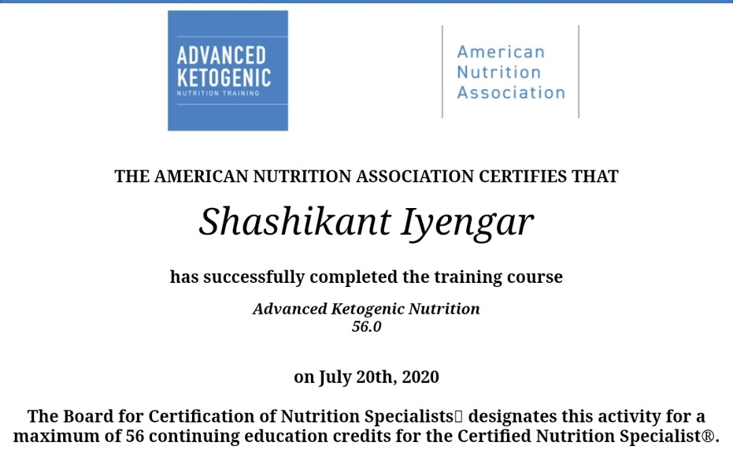

About Me
Shashikant Iyengar
Nutrition Coach
I am one of the few among the most Certified Low Carb Nutrition coach in India. I have done Diploma in Low Carb Nutrition from Dlife.in
I am also Certified In Advanced Ketogenic Nutrition from American Nutrition Association USA. I have 7 Certifications on Low Carbohydrate High Fat / Ketogenic Nutrition from Nutrition Network (Noakes Foundation) – South Africa
In addition to above I am a Certified Sports Nutritionist from K11 Academy of Fitness Sciences India. I am the first from India to be an Accredited Metabolic Health Practitioner by The Society of Metabolic Health Practitioners (SMHP) (Low Carb-USA)
I am listed in the following international sites as a Low Carb Nutrition coach:
Nutrition Network – South Africa
Diet Doctor - Sweden
The Society of Metabolic Health Practitioner - USA
FoodMed – South Africa
Low Carb Practitioner – NZ
Metabolic Multiplier - USA
Download CV



My Life Journey
I am a Type 2 Diabetic in Remission for the last 7 years & following a well formulated Low Carb Diet. I am an Ex Pharma sales professional. I have worked in Top MNCs like Abbott & Pfizer for 35 Years. He has spent more than 3 decades in the Diabetes, Cardiovascular, Neuro-psychiatry and Women's Health Care segment. The pharma exposure has given me a good understanding of the diseases, Medicines & the way the Healthcare Industry works. I help achieve weight loss in a sustainable manner. I have been helping Type 2 diabetics get off insulins & multiple meds for the last 6 years. Diabetes Remission is my specialty. I have also helped clients with Blood pressure get off medicines or lower it significantly.
What is Metabolic Health?
Metabolic health refers to the state of health where an individual has healthy levels of various markers related to metabolism, including blood sugar, blood pressure, cholesterol, and triglycerides. A person with good metabolic health is less likely to develop chronic diseases such as type 2 diabetes, heart disease, and obesity. Some of the key indicators of metabolic health include a low waist circumference, healthy blood sugar levels, healthy blood pressure, low levels of triglycerides, and high levels of HDL cholesterol. Achieving and maintaining metabolic health typically involves a combination of regular exercise, healthy diet, maintaining a healthy weight, avoiding smoking, and managing stress levels.


Endorsments

"I have known the Shashikant Iyengar for some time. I have been interacting with him on Twitter and elsewhere.
He has a good knowledge about the Low Carb Diet, especially in the Indian context, which is mostly a plant based country.
He can help both the vegetarian & the meat eating population with ease.
With India being a capital of diabetes & other metabolic disorders, a Low Carb approach will help immensely.
I wish Shashi a successful time ahead helping to improve the Metabolic status in India."

"Shashikant Iyengar is a trusted resource in the low-carb and keto nutrition community. He has a broad experience in helping people lose weight and improve an array of health concerns, such as type 2 diabetes, metabolic syndrome, and related issues. Although I can work with people internationally, I have referred numerous people to him specifically in India, as I think it's important for people to work with someone a little closer to home when possible. This group is well-versed in supporting vegetarians (as well as meat eaters) who want to follow low-carb diets, and I'm glad to have knowledgeable professionals to refer people to for this. I know that when people work with them, they will get science-based advice that's practical and doable, without false claims and sensationalism. I wish Shashithe best for his venture."

“I have observed the efforts of Shashi over the last few years to raise the awareness and promote the benefits of #LowCarb (Therapeutic Carbohydrate Restriction - TCR) to his local and wider Indian community.
The benefits of TCR are indisputable in improving outcomes in Type 2 diabetes, and for those with the right education, support and resources, putting it into remission. There are certain hurdles to overcome in achieving this in all societies, and Shashi has been able to achieve this.
"Wishing Shashi a successful journey in improving Metabolic Syndrome in India."

“Pioneers like Shashi are going to confront the growing crisis of Type 2 Diabetes & Mental Illnesses in India No small feat.. Only brave heroes embark on such an audacious journey & only they will change the world"

"In the last few years I've known Shashikant, he has made a powerful impact in assisting others to optimize their health. He has been a driving force in the area of low-carb nutrition and diabetes particularly in India. His efforts have influenced the lives of many positively."
"Shashikant has successfully completed a variety of the professional and advanced trainings at Nutrition Network. He is an amazing living example of someone who has successfully - against all odds - reversed Type 2 Diabetes and is now offering this knowledge back to the world with passion and commitment"